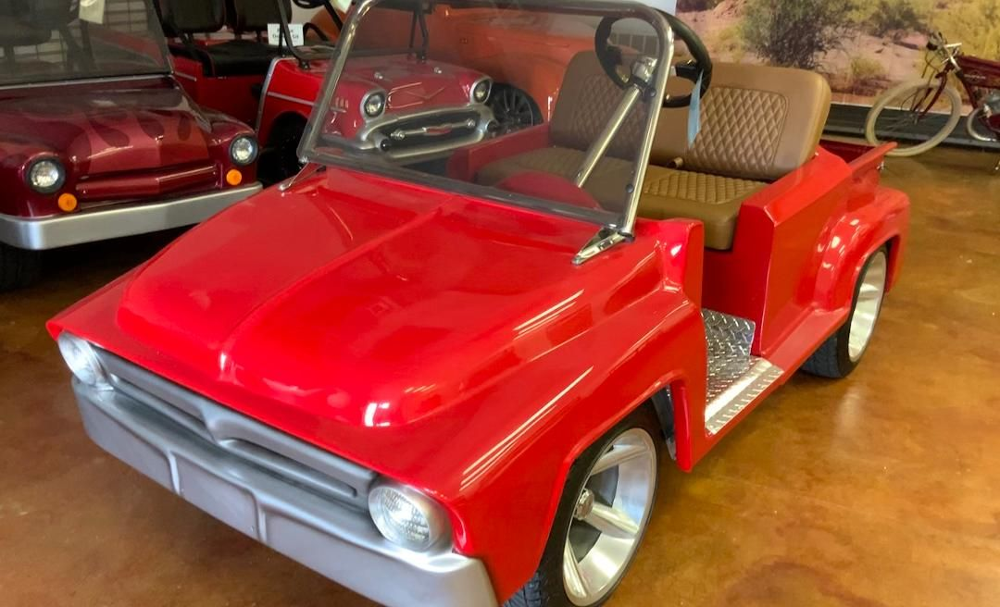

Golf Carts in Texas City, TX
Close to both shops, and a natural fit for the Dike and mainland neighborhoods.
Texas City is a working port with a residential side that a lot of visitors never see, and both parts of town have a use for a golf cart. The most famous ride is the Texas City Dike, the long road that heads out into the bay for fishing, sunsets, and a breeze you cannot get in a subdivision. Families also want carts for the grid of streets around Nessler Park, Godard Park, and the neighborhoods that sit between the refineries and the mainland towns of La Marque and San Leon. It is a practical city with a waterfront habit, and that combination keeps our Texas City customers coming back.
You can reach us from either direction. The main Golf Carts of Texas shop is at 3615 Hwy 146 in Bacliff, about eleven miles and fifteen to twenty minutes from the center of Texas City. The office number is 281-559-3171; the shop cell is 832-814-0452. Our Galveston location at 3538 Broadway is about fifteen miles and twenty-five minutes, counting the causeway. Bacliff is usually a little closer, but if you are already on the island it is often smarter to stop on Broadway. We will not make you pick a favorite; both locations are ours.
The Dike changes what people ask us to build. Some want a sturdy, lifted cart that feels stable in the wind and has room for rods, coolers, and kids. Others need a calmer four-seater for neighborhood streets and a Saturday at Moody-Ness or Bayou Golf Club. We also talk to customers who work odd hours around the port and just want a quiet way to get around a nearby neighborhood when they are home. There is no single Texas City cart, which is why we keep new brands and used trade-ins on the same lot.
We are an authorized Tomberlin dealer and we also sell Star EV, NIU EV, Solana, Bintelli, ActivEV, and Aries EV. Custom work happens in Bacliff: lift kits, paint, lighting, and audio. If you already own a Club Car, Yamaha, or E-Z-GO, we service those too. Texas City heat, bay moisture, and short trips are tough on batteries, so a lot of our conversations start with range and charging rather than with a particular body color.
If you are coming up from La Marque or over from San Leon, you are already in the same service area. Tell us which side of town you are on when you call, and we will tell you whether Bacliff or Broadway is the quicker stop that day and what we actually have in stock.

Carts we recommend for Texas City
These are models we sell every week, with official photos and in-site specs. See the full new golf cart lineup or check current inventory for what is on the lot today.


Street-legal carts in Texas City
The Dike and the city's public streets are not the same as a private neighborhood. If you plan to operate a cart on public roads in Texas City, you will usually need a street-legal low-speed vehicle. In Texas, LSVs are generally limited to roads posted 35 mph or less and must be properly equipped for on-road use. Texas City can set additional local rules, including where those vehicles may go, and we will not invent those rules here. Check with the City of Texas City first. We can help you choose and equip an LSV once you know what you need.
Next step
Visit, call, or get a quote
See what is on the lot, apply for financing through Octane, or tell us what you are looking for.
Texas City golf cart questions
Which shop is closer to Texas City?
Bacliff is usually closer: about 11 miles and 15 to 20 minutes. The Galveston shop is about 15 miles and 25 minutes, including the causeway.
Do people really take golf carts out on the Texas City Dike?
It is a popular ride, but it is a public roadway, not a private driveway. Whether you can take a cart there depends on how the cart is equipped and on current city rules. Ask the City of Texas City, then talk to us about a street-legal setup.
Can I get a cart with room for fishing gear and family?
Yes. Six-seater and utility-style carts are common requests from Texas City customers. Tell us how you actually use the cart and we will steer you toward a layout that has the space.
Do you offer financing for a Texas City purchase?
Financing is available through Octane. Apply online, then call us so we can hold or build the cart that matches your application.
Looking for another city? See all of our areas we serve.